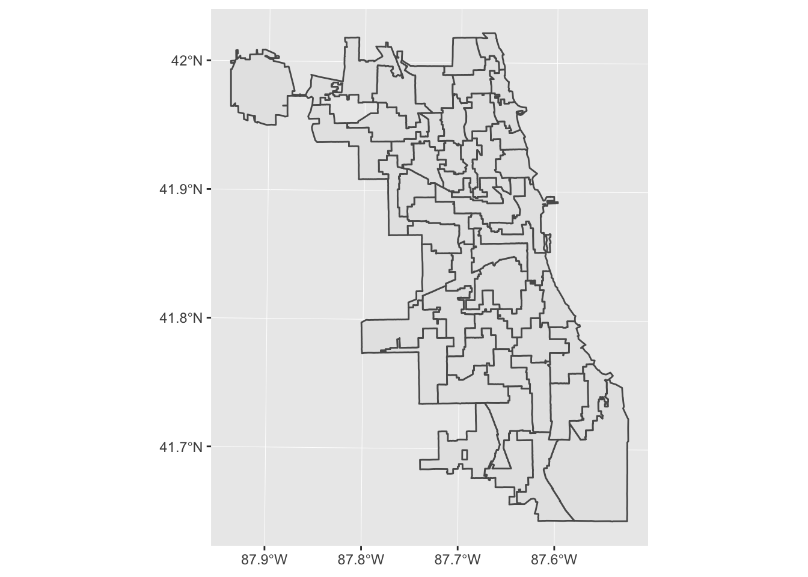
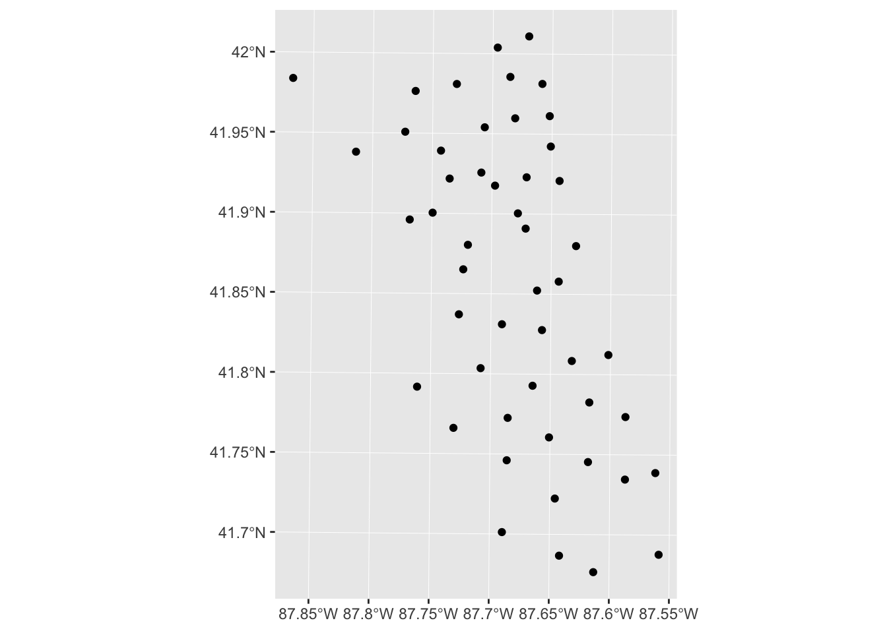
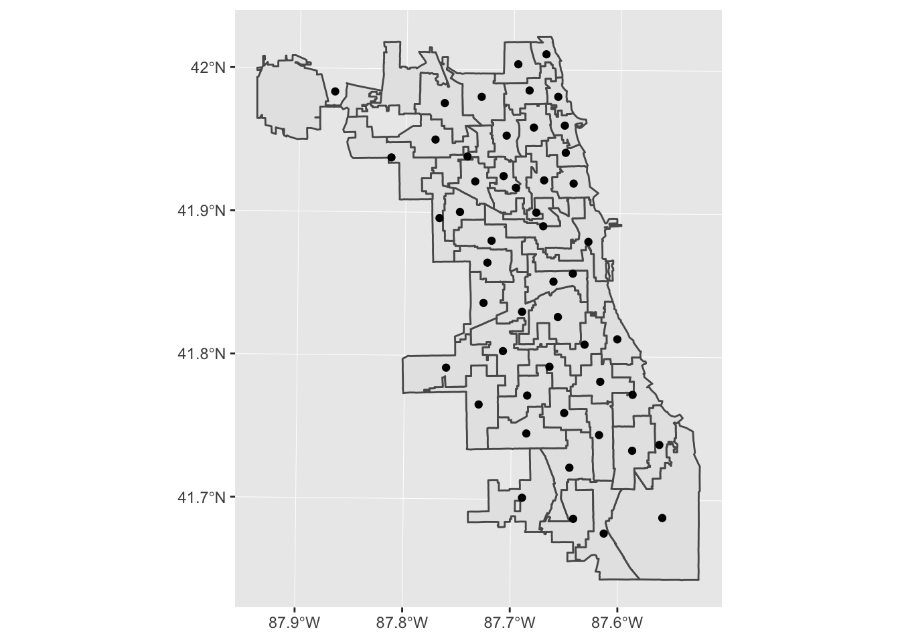
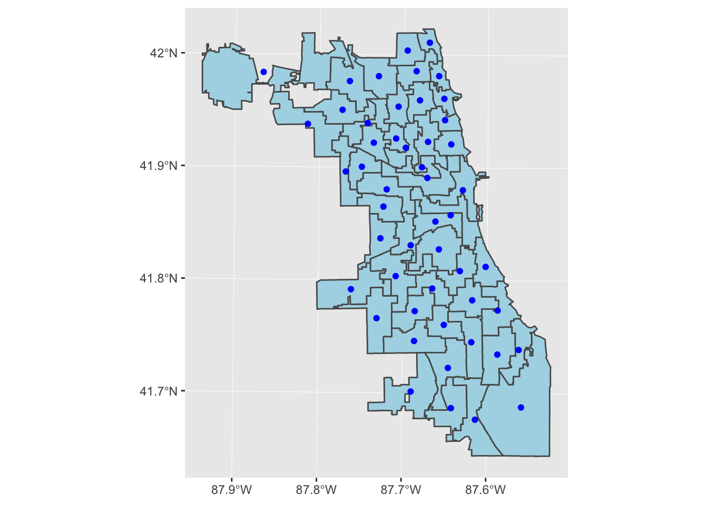
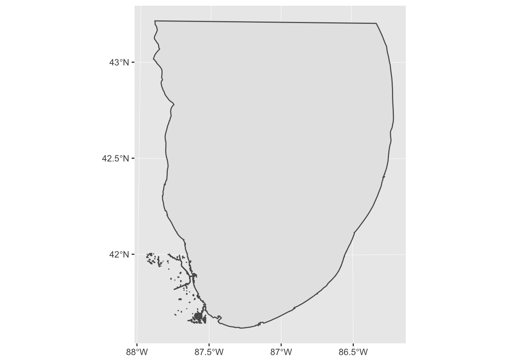
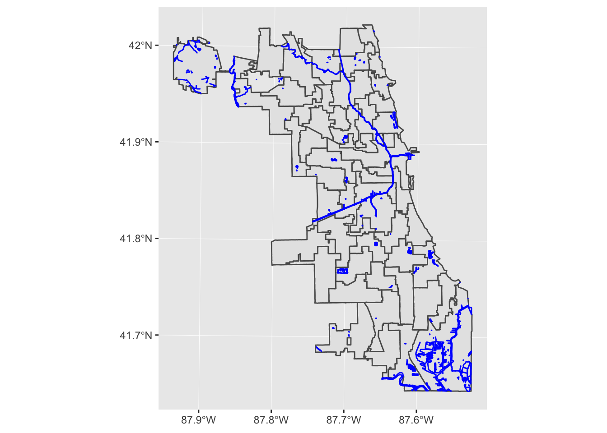
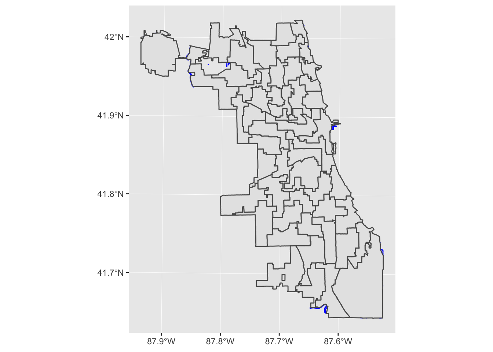
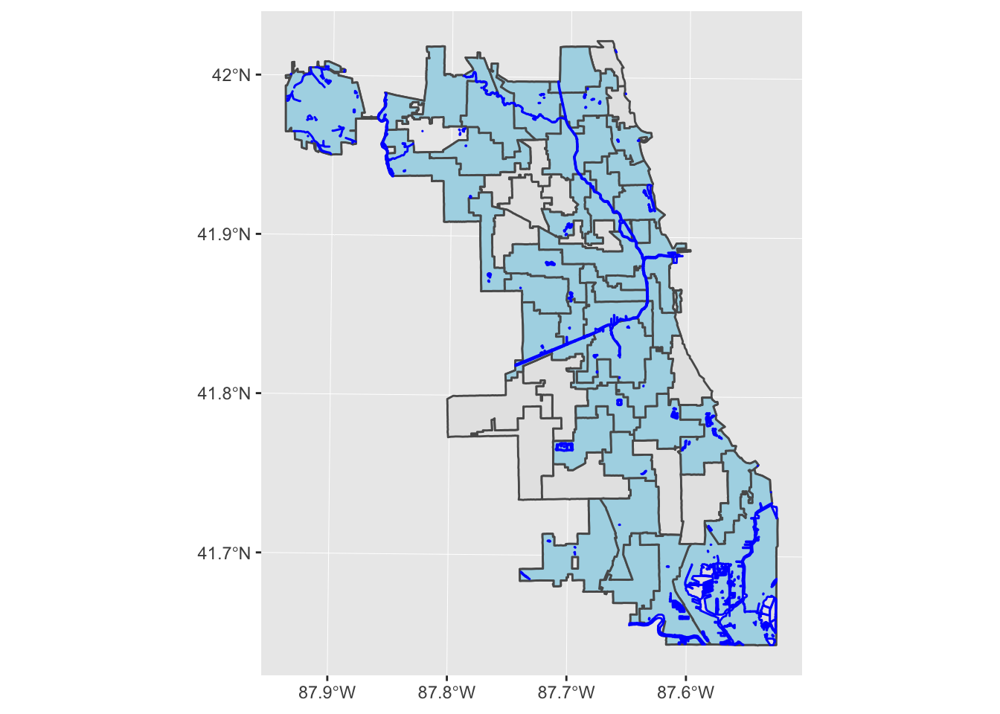

Chapter 3 Multiple-Dataset GIS Operations / Visualization
3.1 Learning Objectives
- Create multi-layered maps
- Calculate the area of polygons
- Find spatial intersections
3.2 Functions Learned
ggplot()geom_sf()st_intersects()filter(): picks cases based on their values, from thedplyrpackage.
Hint: For each new function we go over, type ? in front of it in the console to pull up the help page.
3.3 Interactive Tutorial
This workshop’s script can be found here.
Challenge
Do you remember how to read in and project data? Try it out! Also calculate the centroids.
library(sf)
ward98 <- st_read("data/ward1998.shp")## Reading layer `ward1998' from data source `/Users/angela/Desktop/Spatial Data Science/workshop-notes/data/ward1998.shp' using driver `ESRI Shapefile'
## Simple feature collection with 50 features and 2 fields
## geometry type: MULTIPOLYGON
## dimension: XY
## bbox: xmin: -87.94021 ymin: 41.64434 xmax: -87.52404 ymax: 42.02313
## epsg (SRID): 4269
## proj4string: +proj=longlat +ellps=GRS80 +towgs84=0,0,0,0,0,0,0 +no_defsward98 <- st_transform(ward98, 32616)
centroids <- st_centroid(ward98)## Warning in st_centroid.sf(ward98): st_centroid assumes attributes are
## constant over geometries of xWe are going to start plotting with a new package: ggplot2. This is my favorite package for plotting sf objects, as there is a special function in the package called geom_sf that expressly handles spatial data.
The syntax of a ggplot call is as follows:

To plot an sf object, use geom_sf().
library(ggplot2)
ggplot(data = ward98) +
geom_sf()
Challenge
Use geom_sf to make a ggplot of the centroids data.
ggplot(data = centroids) +
geom_sf()
Note: If you keep getting the following error message, try reversing the geom_sfs again and/or highlighting/re-running the lines of code multiple times.
Error in grid.Call(C_textBounds, as.graphicsAnnot(x\(label), x\)x, x$y, : polygon edge not found
One nice thing about ggplot is that it’s super easy to layer things. For example, if I want to plot the wards and the centroids, I can do that by moving the data = argument to within the geom_sf() call.
ggplot() +
geom_sf(data = ward98) +
geom_sf(data = centroids)
I can also change colors and other settings.
ggplot() +
geom_sf(data = ward98, fill = "lightblue") +
geom_sf(data = centroids, color = "blue")
So far, we’ve plotted data that was from the same original dataset. What if we want to add a layer with Chicago’s waterways?
First we download, import, and project data from the Chicago Data Portal. As an exercise, I’m going to download a Chicago waterways data GeoJSON, which st_read can also interpret and convert into an sf object.

Challenge
Read and project the waterways JSON. Hint: save your JSON file in the data/ folder in your workspace.
water <- st_read("data/Waterways.geojson")## Reading layer `Waterways' from data source `/Users/angela/Desktop/Spatial Data Science/workshop-notes/data/Waterways.geojson' using driver `GeoJSON'
## Simple feature collection with 605 features and 6 fields
## geometry type: MULTIPOLYGON
## dimension: XY
## bbox: xmin: -87.9389 ymin: 41.6195 xmax: -86.20666 ymax: 43.21631
## epsg (SRID): 4326
## proj4string: +proj=longlat +datum=WGS84 +no_defswater <- st_transform(water, 32616)Now, plot it to see if things are looking alright.
ggplot() +
geom_sf(data = water)
Uh oh, looks like we have Lake Michigan with everything else. We want to filter out that feature. We’ll use the filter() command from dplyr.
library(dplyr)
water_clean <- filter(water, name != "LAKE MICHIGAN")Now we can make a map with both the wards and the waterways in Chicago.
ggplot() +
geom_sf(data = ward98) +
geom_sf(data = water_clean, color = "blue")
Note that order matters here! ggplot plots in the order that you give your functions to it, so if you reorder the geom_sf calls, the wards are mapped after - and on top of! - the rivers.
# Incorrect order of geom_sf() calls
ggplot() +
geom_sf(data = water_clean, color = "blue") +
geom_sf(data = ward98)
The last thing we’ll do is figure out which wards intersect with waterways, using a powerful sf function called st_intersects. The output of st_intersects is a bit strange: it’s a list of indexes of the intersected features for each ward.
The main thing you need to know is: if there is nothing in the list for a feature, that means nothing intersects with it.
intersects <- st_intersects(ward98, water_clean)
str(intersects)## List of 50
## $ : int [1:146] 21 28 38 39 46 47 59 67 68 71 ...
## $ : int [1:28] 2 3 4 5 6 7 8 9 10 11 ...
## $ : int [1:24] 1 2 15 16 17 18 19 20 22 23 ...
## $ : int(0)
## $ : int(0)
## $ : int [1:3] 186 187 189
## $ : int [1:3] 45 62 63
## $ : int [1:3] 192 194 195
## $ : int(0)
## $ : int [1:6] 381 389 390 569 579 586
## $ : int [1:6] 64 65 66 143 155 156
## $ : int 224
## $ : int [1:14] 37 40 43 44 49 50 51 53 54 55 ...
## $ : int(0)
## $ : int 382
## $ : int [1:34] 2 3 15 16 17 18 19 20 303 569 ...
## $ : int [1:13] 30 314 315 316 328 329 458 463 464 466 ...
## $ : int [1:23] 154 228 297 310 311 321 323 325 327 330 ...
## $ : int [1:6] 370 581 582 583 584 585
## $ : int [1:3] 380 384 386
## $ : int 58
## $ : int(0)
## $ : int(0)
## $ : int [1:21] 291 292 293 294 295 296 307 308 309 311 ...
## $ : int [1:18] 383 400 401 402 411 413 420 422 428 429 ...
## $ : int [1:3] 509 510 511
## $ : int(0)
## $ : int [1:16] 264 446 447 452 454 455 460 462 465 478 ...
## $ : int(0)
## $ : int 449
## $ : int [1:34] 168 191 250 255 256 257 267 268 274 275 ...
## $ : int(0)
## $ : int [1:15] 227 247 250 253 258 265 275 280 284 290 ...
## $ : int [1:67] 29 60 61 79 152 153 162 178 193 213 ...
## $ : int [1:59] 70 99 154 228 297 310 331 332 333 334 ...
## $ : int [1:17] 48 241 248 298 299 300 301 302 305 306 ...
## $ : int 469
## $ : int [1:15] 153 200 251 252 254 260 262 263 266 270 ...
## $ : int [1:2] 425 438
## $ : int [1:8] 432 433 439 440 453 456 458 459
## $ : int(0)
## $ : int(0)
## $ : int [1:32] 144 145 146 147 148 149 150 151 157 158 ...
## $ : int [1:4] 205 221 227 526
## $ : int(0)
## $ : int(0)
## $ : int [1:32] 69 73 87 105 119 121 126 133 135 138 ...
## $ : int [1:7] 80 84 89 229 230 232 236
## $ : int(0)
## $ : int [1:2] 190 223
## - attr(*, "predicate")= chr "intersects"
## - attr(*, "region.id")= chr [1:50] "1" "2" "3" "4" ...
## - attr(*, "ncol")= int 604
## - attr(*, "class")= chr "sgbp"Note: This is where projection is extremely important. If you get an error message that says:
Error: st_crs(x) == st_crs(y) is not TRUE
that probably means that you forgot to project one of your datasets. Check the CRS with both and fix it with st_transform.
This is a little hairy, so in order to use this reasonably, we combine it with the filter command we learned earlier. We are filtering the original data by whether or not it has any water features that intersect with it.
water_wards <- filter(ward98, lengths(intersects) > 0)
Note: Don’t forget the s in lengths like I did during the workshop!
Challenge
The grand finale!
ggplot() +
geom_sf(data = ward98) +
geom_sf(data = water_wards, fill = "lightblue") +
geom_sf(data = water_clean, color = "blue")
Remember to push your work to Github to back it up!
3.4 Links
- Link to current Chicago waterways data: https://data.cityofchicago.org/Parks-Recreation/Waterways/eg9f-z3t6
geom_sfdocumentation page: https://ggplot2.tidyverse.org/reference/ggsf.htmlggsavedocumentation page: https://ggplot2.tidyverse.org/reference/ggsave.htmldplyrpackage documentation site: https://dplyr.tidyverse.org- Excellent blog post on how to manipulate spatial information: http://strimas.com/r/tidy-sf/